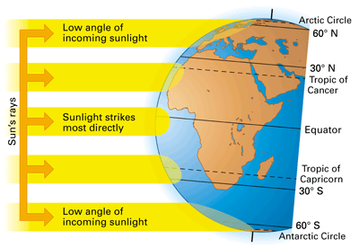
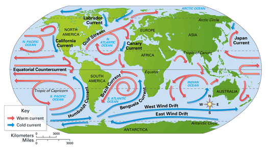

Objectives
- Explain how the sun heats Earth's surface unevenly.
- Describe global patterns of wind, precipitation, and ocean currents.
- Distinguish between local climates and microclimates.
Key Terms
What determines the types of ecosystems found in a certain part of the world? Usually the climate of the region—particularly the range of temperature and amount of rainfall—is a major part of the answer. These abiotic factors influence the types of organisms that live in the region. Earth's climate patterns are largely produced by the uneven heating of the planet by the sun.
Uneven Heating of Earth's Surface
Energy from the sun warms Earth's surface. But because of Earth's spherical shape, different locations on Earth's surface receive different amounts of solar energy. Near the equator, the sun's rays strike the surface most directly. At latitudes farther from the equator the rays strike Earth's surface at lower angles, causing the same amount of solar energy to be spread over a larger area (Figure 34-6). As a result, regions on Earth's surface farther from the equator absorb less heat and generally experience cooler temperatures than regions closer to the equator. These temperature differences also drive global air and water movements.
|  |
Figure 34-6
The sun's rays strike Earth most directly near the equator. Near the poles, the same amount of solar energy is spread over a much greater area. |
Earth's surface can be divided into different temperature zones based on lines of latitude. The region that lies between 23.5° N latitude (the Tropic of Cancer) and 23.5° S latitude (the Tropic of Capricorn), called the tropics, is the warmest temperature zone. The region north of the Arctic Circle (66.5° N) and the region south of the Antarctic Circle (66.5° S), called the polar zones, receive the least amount of direct sunlight year-round. The polar zones are the coldest temperature zones. The latitudes in between the tropics and the polar zones in each hemisphere are called the temperate zones. Most of the United States is located within the northern temperate zone. Seasonal temperature changes can be very large in some temperate zones. But in general, the temperate zones experience less extreme heat than the tropics and less extreme cold than the polar zones.
Wind, Precipitation, and Ocean Currents
The uneven heating of Earth's surface by the sun is also a driving force behind global patterns of winds and precipitation (rain, snow, and sleet). When air is warmed it can absorb more moisture, and it also tends to rise. Thus air near the equator, heated by the direct rays of the sun, absorbs moisture and rises. Higher in the atmosphere the air cools again, forming clouds that produce rainfall. This pattern means that many areas of Earth close to the equator tend to have warm temperatures and heavy rainfall year-round. Most rain forests are found in this part of the world, as you will read in Concept 34.3.
After losing moisture over the equator, air masses spread away from the tropics. The dry air descends again and warms at latitudes of about 30° N and 30° S. Some of the world's largest deserts are found in these regions. At higher latitudes, the moving air absorbs more moisture and produces precipitation again.
The rising and falling of air masses, combined with Earth's rotation, produce predictable wind patterns. These wind patterns combine with the uneven heating of Earth's surface, the rotation of the Earth, and the shapes of the continents, producing surface currents. A current is a river-like flow pattern within a body of water. Notice in Figure 34-7 that some surface currents move warm water from the tropics toward the polar zones, while others move cold water from the polar zones back toward the tropics. Surface currents can greatly affect regional climates. For instance, the Gulf Stream carries warm water northward from the tropics. This makes the climate in western Europe warmer than other areas at similar latitudes.
|  |
Figure 34-7
Global wind patterns and Earth's rotation create warm and cold surface currents in the oceans. These surface currents affect the climate on the continents. |
Local Climate
On an August day, people in Los Angeles' San Fernando Valley might face temperatures of 38°C (100°F), while just 30 kilometers away, people at the beach are enjoying the comfortable 24°C (75°F) outdoor air. What causes this difference within such a small geographic area? Local climate variations may be influenced by nearby large water bodies. Oceans and large lakes affect climate because water tends to absorb and release heat more gradually than most other substances (such as soil and rock). Because of the heat-absorbing ability of water, areas near the shore tend to be cooler in the summer than inland areas. In turn, the release of heat from water to the air generally results in milder winters near the shore than inland.
Mountains also affect local climate. First, air temperature declines by about 6°C with every 1000-meter increase in elevation. This is why it becomes cooler as you hike up a mountain. Second, mountains near a coast can block the flow of cool, moist air from the ocean, causing different climates on opposite sides of the mountain range. For example, in California, Oregon, and Washington, precipitation falls on the western, coastal side of the mountain ranges. The eastern side of the mountains can be dry and even desert-like.
Microclimate
Organisms living in the same climate region may be exposed to different conditions created by shade, snow cover, or windbreaks. For example, a kangaroo rat avoids the hot, dry daytime conditions on the desert surface by living underground in a dark, moist burrow. Turn over a fallen log, and it is teeming with life that thrives under conditions quite different from those on top of the log. Such small-scale differences in climate result in a microclimate, the climate in a specific area that varies from the surrounding climate region. In the next concept, you'll return to the global scale to explore how climate patterns determine the distribution of Earth's major ecosystems.
Concept Check 34.2
1. Explain how the uneven heating of Earth's surface creates different temperature zones.
2. How do surface currents affect climate patterns?
3. Why might a town located on a large lake be cooler in the summer than a town 100 kilometers away from the lake?
4. Give an example of a microclimate.